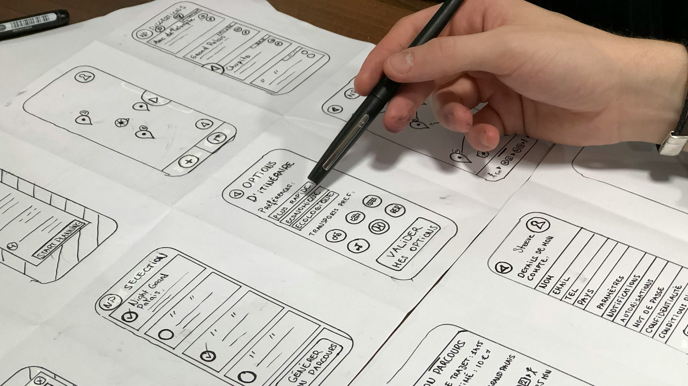
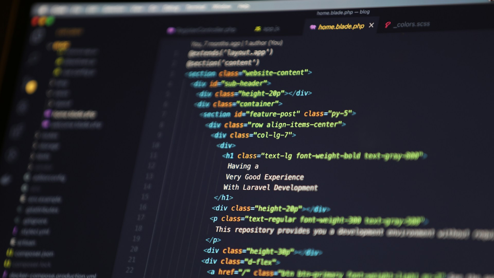

Jedes Projekt bei AttilaART wird in vier Schritte unterteilt:
Dauer: 2 - 5 Tage
1. Wireframing

Der erste Schritt ist immer das Wireframing. Das beinhaltet Folgendes:
Bestimmung der Deliverables (gebrauchte Seiten, Sprachen, etc.)
Bestimmung der Designphilosophie und des Ziels der Webseite
Erstellung von Wireframes (Mock-up) von den Seiten
Dauer: 1 - 2 Wochen
2. Prototyping
In diesem Schritt wird eine funktionierende Webseite entwickelt, welche den Basisanforderungen entspricht. Hier
wird oft besprochen, über spezifische Details.
Hier wird auch der Grossteil des Inhaltes geschrieben, also wird am meisten Input von Ihnen gebraucht.
Dauer: 1 - 2 Wochen
3. Entwickelung

In dieser Phase erfolgt der Grossteil der Entwicklung der Webseite. Alle Features werden hinzugefügt, Details
werden abgeklärt, und am Schluss entsteht eine komplette Webseite (die aber noch nicht publiziert ist).
Dauer: 2 - 3 Tage
4. Publizierung
Am Schluss wird der Server gehostet und mit Ihrer gewählten Domain verbunden. Anschliessend werden Ihnen alle
Zugriffe geschickt.
Bis zu 30 Tage nach der Publizierung können sämtliche Änderungen kostenlos angefordert werden. Danach kostet jede
geänderte Seite 5 CHF*.
* Dies gilt natürlich nicht für Änderungen, die Sie selber vornehmen.